開卷有益 ／
分科測驗 ／ 化學 ／ 114 年114 年分科測驗化學試題與答案
這一頁是民國 114 年分科測驗化學的整份歷屆試題，共 31 題，題目與標準答案出自大考中心 分科測驗歷年試題（依著作權法 §9，考試試題不受著作權保護），其中 31 題附有詳解。以下逐題列出題幹、選項與答案；要計時作答或記錄成績，請用線上練習。
大學入學考試中心原始場次代碼：分科化學
線上作答這一科 →
全部 31 題
第 1 題
穩定分子的分子式 CH3SH x 、 CH 3 (CH y ) 3 Cl、 CH3 NHz 中,則x、y、z 值應分別為下列
哪一項?
（A） 1、2、2（B） 1、2、3（C） 2、3、1（D） 2、3、2（E） 3、2、1答案：（A）
詳解與考點 正解：判準是中性穩定分子中各原子的常見鍵結數。CH3SHx 的硫已與碳形成一鍵，還需一個氫形成第二鍵，所以 x=1；CH3(CHy)3Cl 的鏈中 CHy 各已有兩個單鍵，尚需兩個氫，所以 y=2；CH3NHz 的氮與 CH3 形成一鍵後，還需兩個氫湊成三鍵，所以 z=2。故選 A。
B：z=3 會使 CH3NHz 中的中性氮形成四個單鍵，與題設的中性穩定分子不符。
C：x=2 與 y=3 都不符合硫與碳的常見價數；把原子已有的鍵結數漏算，才會多補氫。
D：x=2、y=3 同樣把硫與鏈中碳所需的氫數估得過多。
E：x=3 使硫的鍵結數更不合理，不能形成題示的中性分子。
本題考點：價鍵（valence bonding）——先數原子已形成的單鍵，再補到其常見鍵結數；結構式（structural formula）——判斷分子式時，要以相鄰原子的實際連結數決定氫原子數；中性分子（neutral molecule）——未標示電荷時，避免把需帶電的四鍵氮或過度鍵結的硫當成一般中性結構。
第 2 題
定溫定容下,某氣體( X 2 Y)可進行分解反應,其化學反應式如式1:
X2 Y(g) → X2 (g) +Y(g) (式1)
P0
已知 X 2 Y、 X 2 及Y 彼此之間互不反應,且三者皆可視為
理想氣體。若初始的容器內僅有 X 2 Y,其壓力為 0P ;反應 X2Y 分壓
過程中, X 2 Y分壓與時間的關係如圖1 所示,則容器內
總壓隨時間的變化可能為何? 0
0 時間
圖1
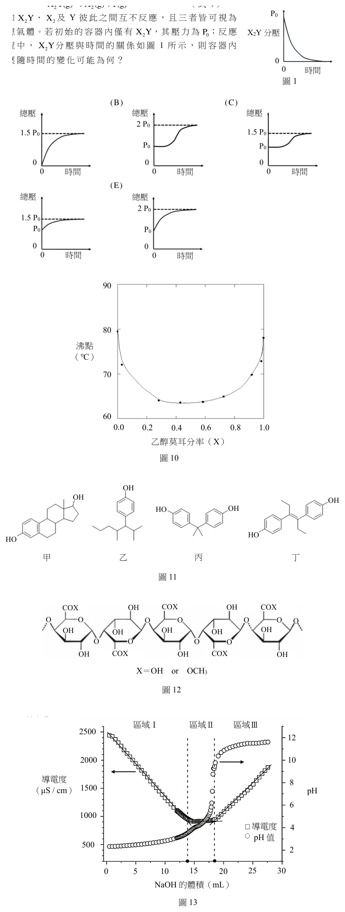
（A） （B） （C） 總壓 總壓 總壓
2 P0
1.5 P0 1.5 P0
P0 P0
0 0 0
0 時間 0 時間 0 時間（D） （E） 總壓 總壓
2 P0
1.5 P0
P0 P0
0 0
0 時間 0 時間答案：（E）
詳解與考點 正解：定溫、定容時壓力與氣體莫耳數成正比。設某時 X2Y 的分壓為 p，已分解的量以壓力表示為 P0−p，因此 X2 與 Y 的分壓各為 P0−p。總壓為 P總=p+(P0−p)+(P0−p)=2P0−p；初值是 P0，之後隨 X2Y 分壓下降而上升，且兩條曲線在每一時刻相加為 2P0，故選 E。
A、B、C、D：這些曲線都未同時滿足 P總=2P0−p。判別時不能只看總壓是否上升，還須檢驗起點、平衡平台與各時刻的變化量；每消耗 1 份 X2Y，會同時生成 1 份 X2 與 1 份 Y，總壓的增加量必須等於 X2Y 分壓的減少量。
本題考點：道耳頓分壓定律（Dalton's law of partial pressures）——總壓要逐一加總各成分的分壓；定溫定容的理想氣體（ideal gas at constant T and V）——以分壓變化直接代表莫耳數變化；化學計量與壓力曲線——先由反應式寫出各成分的增減量，再決定曲線方向與平台。
第 3 題
圖2 為電解NaCl(l)的電流與時間的關係圖,試問經過3 小時後,大約可以生成
多少克鈉金屬?(鈉的原子量請參見封面週期表)
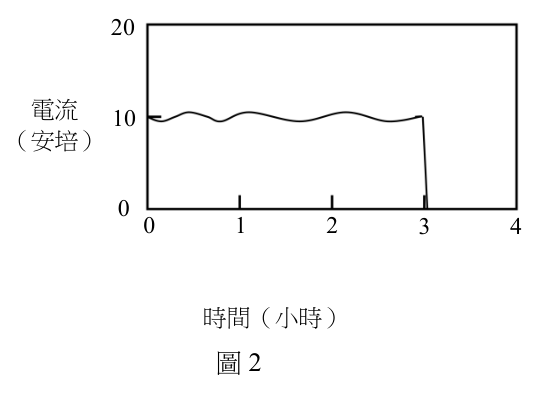
（A） 25 20（B） 13（C） 1.1 電流 10
(安培)（D） 0.02（E） 0 0
0 1 2 3 4
時間(小時)
圖2答案：（A）
詳解與考點 正解：電解產物量取決於電流—時間圖下的面積，也就是通過的總電量。圖中 3 小時內的面積為 30 A·h，故 Q=30 A·h×3600 s/h=1.08×10⁵ C。n(e−)=1.08×10⁵ C/(9.65×10⁴ C/mol)=1.12 mol；陰極反應為 Na++e−→Na，所以 n(Na)=1.12 mol。m(Na)=1.12 mol×23 g/mol≈26 g，依圖形讀值約為 25 g，故選 A。
B：13 g 約為把總電量少算一部分後的量級，沒有完整累積三小時內的電流—時間面積。
C：1.1 接近電子或鈉的莫耳數量級，尚未乘上鈉的莫耳質量，不能作為質量答案。
D：0.02 g 未完成 A·h 轉換為 C、再除以法拉第常數的步驟，量級明顯過小。
E：電流的瞬時數值不是電量；必須先對時間積分，才可代入法拉第定律求出生成的鈉質量。
本題考點：法拉第電解定律（Faraday's law of electrolysis）——先由 Q=I×t 或電流—時間面積求電量，再換成電子莫耳數；電流—時間圖——圖下面積的單位是 A·s 或 C，不是 A；電極反應計量——Na+ 還原為 Na 每 1 mol 只需 1 mol e−。
第 4 題
將pH=2.0 的HCl 水溶液50 mL,與一未知濃度的KOH 水溶液50 mL 均勻混合後,
若溫度沒有改變,體積為100 mL,此溶液的pH 值為4.0。則原來KOH 水溶液
的濃度(M)為下列何者?
（A） 0.098（B） 0.0098（C） 0.0049（D） 0.0018（E） 0.00098答案：（B）
詳解與考點 正解：混合後 pH=4.0，溶液仍呈酸性，所以 HCl 過量而 KOH 已完全被中和。先換算混合前的氫離子：pH=2.0，所以 [H⁺]=1.0×10⁻² mol/L；體積 50 mL=0.050 L，n(H⁺)=1.0×10⁻²×0.050=5.0×10⁻⁴ mol。混合後 [H⁺]=1.0×10⁻⁴ mol/L；總體積 100 mL=0.100 L，剩餘 n(H⁺)=1.0×10⁻⁴×0.100=1.0×10⁻⁵ mol。被 OH⁻ 中和的量為 5.0×10⁻⁴−1.0×10⁻⁵=4.9×10⁻⁴ mol，因此 n(KOH)=4.9×10⁻⁴ mol。原 KOH 體積為 0.050 L，c(KOH)=4.9×10⁻⁴/0.050=9.8×10⁻³ mol/L=0.0098 M，故選 B。
A：0.098 M 比計算值大 10 倍。50 mL 應換成 0.050 L；體積單位或濃度次方錯一位，就會得到這種 10 倍偏差。
C：0.0049 M 是把中和的 KOH 物量除以混合後的 0.100 L。題目問的是原 KOH 溶液濃度，分母必須使用原來的 0.050 L。
D：此值不符合兩段氫離子物量相減所得的 4.9×10⁻⁴ mol。分辨關鍵在於剩餘氫離子要以混合後的 0.100 L 計算，再回到原 KOH 的 0.050 L 求濃度。
E：0.00098 M 是正確濃度的十分之一，表示在物量或體積的 10 倍換算上少算了一個因子。
本題考點：強酸強鹼中和計量（stoichiometry of neutralization）——先把各階段濃度換成 mol，再以過量離子的前後差求中和量；pH 與氫離子濃度（pH and hydrogen ion concentration）——由 pH=−log[H⁺] 判斷混合後誰過量；稀釋與體積變化（dilution and volume change）——混合後濃度配總體積，原溶液濃度配原體積。
第 5 題
氣體A 與氣體B 反應生成氣體C。在定溫下,某固定體積的密閉容器中,A、B
與C 的起始濃度分別為1.000 M、1.500 M 與1.000 M;當反應達到平衡後,A 的
濃度為0.921 M,B 的濃度為1.342 M,C 的濃度為1.158 M。試問此反應的化學
反應式為何?
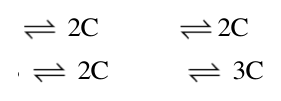
（A） A+B 2C（B） A+2B 2C（C） 2A＋BC（D） A+3B 2C（E） 2A+3B 3C答案：（B）
詳解與考點 正解：以平衡濃度減初始濃度，可得 Δ[A]=0.921−1.000=−0.079 M、Δ[B]=1.342−1.500=−0.158 M、Δ[C]=1.158−1.000=+0.158 M。將變化量同除以 0.079 M，比例為 A：B：C=−1：−2：+2，所以反應式是 A+2B→2C，故選 B。
A：A+B→2C 要求 A 與 B 的消耗量相等，但觀察值中 B 的消耗量是 A 的 2 倍。
C：2A+B→C 要求 A 的消耗量為 B 的 2 倍，與題目中 A 較少、B 較多的比例相反。
D：A+3B→2C 雖可使 C 的生成量為 A 的 2 倍，但它要求 B/A=3；題目實際為 0.158/0.079=2。
E：2A+3B→3C 要求 B/A 與 C/A 都為 3/2，均不符合觀察到的 2。
本題考點：反應進行表（ICE table）——先以平衡值減初始值得到各物種的變化量；化學計量比（stoichiometric ratio）——反應物消耗量與生成物增加量的最簡整數比就是平衡反應式係數；固定體積容器——濃度變化量可直接比較莫耳數變化量。
聚二甲基矽氧烷(甲)與化合物(乙)試劑反應後,其線形結構轉變成三維 網狀結構,物理性質也從液體的矽油轉變成具有彈性的固體矽膠,圖3 為其分子 結構及化學反應示意圖,此反應稱為交聯反應(a、b、c 分別代表括弧中單元 重複的數目)。
圖3
第 6 題
交聯反應中,(甲)末端的碳碳雙鍵與試劑(乙)中的哪個基團形成新的化學鍵結?
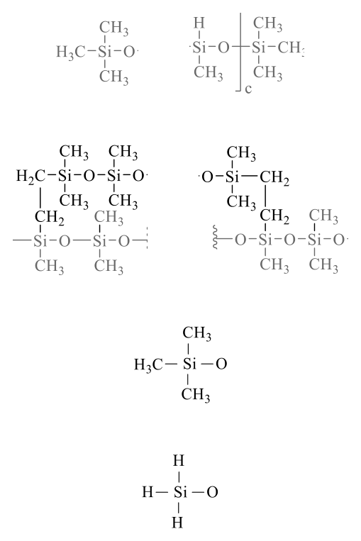
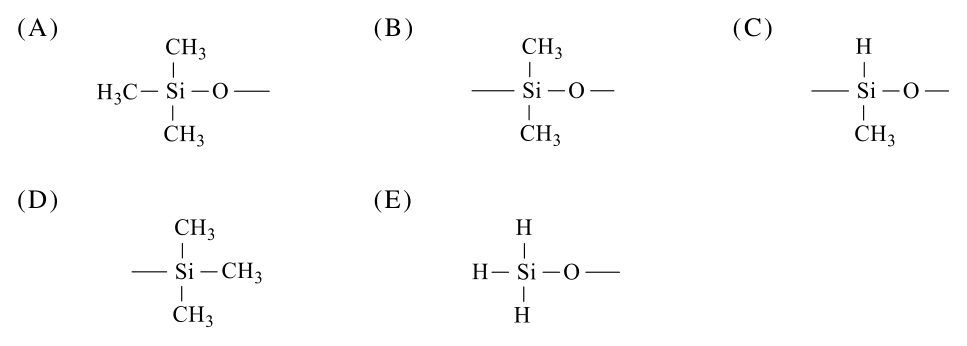
本題選項為上圖中的 A／B／C／D，請對照圖片作答。
答案：（C）
詳解與考點 正解：聚二甲基矽氧烷由線形結構變為三維網狀，關鍵是（甲）末端的碳碳雙鍵與（乙）的反應性官能基形成新的共價鍵，讓不同高分子鏈之間出現交聯點。交聯反應的一般判準可確定，但（乙）的具體官能基配對仍有不確定性，因此本則把握度較低，故選 C。
A、B、D、E：交聯的判別必須回到「是否能與末端碳碳雙鍵反應，並在分子鏈之間建立共價橋鍵」。不符合這個條件的基團，不能作為本題所問的新鍵結來源。
本題考點：高分子交聯（polymer crosslinking）——看到線形聚合物轉為網狀固體時，判斷是否形成了鏈與鏈之間的共價鍵；官能基反應性（functional-group reactivity）——由反應物的雙鍵與可反應基團配對，判定新鍵結形成的位置。
第 7 題
在相同反應條件下,將適當比例的不同重量(甲)和(乙)進行交聯反應,反應
完全後所得到的矽膠會有不同彈性,主要原因為何?
（A） 反應的基團不同（B） 反應的活性不同（C） 反應速率不同（D） 交聯反應程度不同（E） 溶解度不同
二、多選題(占48分)答案：（D）
詳解與考點 正解：題幹已限定反應條件相同且反應完全，差異要從固化後網狀結構的疏密判斷。改變（甲）與（乙）的用量配比，會改變每條聚合物鏈可連結的交聯點數；交聯密度不同，矽膠受拉伸時鏈段可移動的程度不同，彈性便會改變。這是交聯反應程度不同所致；配比與結構細節的對應仍有不確定性，以下以交聯密度的一般判準說明，故選 D。
A：反應物的末端雙鍵與反應性基團種類並未因用量改變而變成另一種基團；改變的是形成網狀結構的數量與密度。
B：反應活性會影響反應是否容易發生或所需條件，但題幹已說明在相同條件下反應完全，不能用活性差異解釋最終彈性。
C：反應速率只描述達到完成所需的快慢。反應完成後材料彈性的主要判準是交聯密度，而非到達終點的速度。
E：溶解度不是已固化矽膠彈性差異的直接來源；分辨關鍵在鏈與鏈之間建立了多少交聯點。
本題考點：交聯密度（crosslink density）——比較高分子彈性時，先看單位體積內鏈間共價連結的多少；高分子網狀結構（polymer network）——線形鏈被交聯後，鏈段活動受限而材料性質改變；反應速率與平衡性質（reaction rate vs final property）——題幹給出反應完成時，勿以速率取代最終結構的判斷。
第 8 題 （多選）
下列有關石墨與金剛石的敘述,哪些正確?
（A） 石墨與金剛石為同素異形體（B） 石墨的導電性與結構中的π 鍵有關（C） 石墨的碳碳鍵長大於金剛石的碳碳鍵長（D） 金剛石為三維共價網狀固體,常溫常壓時可導電（E） 石墨內的碳以 sp 2 混成軌域鍵結,層與層間有凡得瓦作用力答案：（A）（B）（E）
詳解與考點 正解：共同判準是石墨與金剛石都只由碳組成，但碳原子的鍵結與排列不同；石墨的層內 sp² 鍵結留下可離域移動的電子，層間則以較弱的凡得瓦作用力相連。因此同時符合組成、導電機制與層狀結構的敘述為 A、B、E，故選 ABE。
A：石墨與金剛石都是元素碳形成的不同結構，屬於同素異形體。
B：石墨層內的 π 電子可在平面方向離域移動，所以導電性與 π 鍵系統有關。
E：石墨中的碳主要採 sp² 混成，形成平面六角網狀層；各層之間主要是凡得瓦作用力。
C：石墨的 sp² 碳碳鍵具有較高鍵級，鍵長約比金剛石 sp³ 的單鍵短，不是較長。
D：金剛石雖是三維共價網狀固體，但所有價電子都局限在共價鍵中，常溫常壓下沒有可自由移動的載子，不能導電。
本題考點：同素異形體（allotrope）——元素相同而原子排列或鍵結方式不同時，判為同素異形體；混成與鍵長（hybridization and bond length）——比較 sp² 與 sp³ 碳碳鍵時，以鍵級較高者鍵長較短判斷；石墨導電性（electrical conductivity of graphite）——看到層狀 sp² 網路時，追問是否有可離域移動的 π 電子。
第 9 題 （多選）
氦(He)是惰性氣體中最輕的元素,氦的一個價電子游離後,生成了氦離子( He + )。
下列關於 He + 的敘述,哪些正確?
（A） 沒有3d 軌域（B） He + 的半徑比He的半徑大（C） 基態 He + 的電子組態與氫原子相同（D） 可用波耳的原子模型理論解釋 He + 光譜（E） 由 He + 到 He 2+ 的游離能比由He到 He + 的游離能大答案：（C）（D）（E）
詳解與考點 正解：He⁺只剩一個電子，屬於氫樣離子；它的能階與氫原子同型，只是受核電荷 Z=2 的影響而能量尺度不同。據此可判斷基態電子組態、可用的模型與再次游離所需能量，正確為 C、D、E，故選 CDE。
C：基態 He⁺的電子組態為 1s¹，與基態氫原子相同。
D：單電子系統沒有電子間排斥，可用波耳原子模型描述其離散能階與光譜。
E：由 He⁺移除最後一個 1s 電子時，電子受 +2 核電荷吸引且沒有其他電子遮蔽，所需游離能大於由中性 He 移除第一個電子。
A：軌域是否存在由量子數允許與否決定，不以該離子是否有電子佔據為準；氫樣離子仍有 n=3、l=2 對應的 3d 軌域。
B：He⁺只有一個電子且核電荷為 +2，電子雲受吸引較強，半徑比中性 He 小，不是較大。
本題考點：氫樣離子（hydrogen-like ion）——只含一個電子的原子或離子，可依氫原子的能階模型判斷；電子組態（electron configuration）——基態先依電子數填入最低能量的 1s 軌域；游離能與有效核電荷（ionization energy and effective nuclear charge）——比較移除電子難易時，看核吸引與遮蔽是否改變。
第 10 題 （多選）
甲、乙、丙、丁、戊五種元素的原子序均小於20。甲是週期表中質量最小的元素,
乙是週期表中電負度最大的元素,丙原子最外殼層電子數是次外殼層電子數的
三倍,丁原子序大於丙,而且丁與丙為同一族,另外,戊和乙的原子序總和等於
丙和丁原子序總和。下列敘述哪些正確?
（A） 甲與乙形成的化合物不溶於水（B） 在自然界中的丙有兩種同位素（C） 甲與丙反應後所得的化合物,可形成分子間氫鍵（D） 丁在常溫下為黃色固體（E） 戊的氧化物溶於水呈酸性答案：（C）（D）（E）
詳解與考點 正解：先依題幹定位元素：甲為 H、乙為 F、丙為 O、丁為 S，戊為 P。再逐一檢驗其化合物、同位素與元素性質，可判定正確選項為 C、D、E。故選 C、D、E。
C：H 與 O 形成 H2O，水分子間可藉 O—H 鍵與氧的孤電子對形成分子間氫鍵，敘述正確。
D：丁為 S，硫在常溫下為黃色固體，敘述正確。
E：戊為 P，其氧化物溶於水可形成酸性溶液，敘述正確。
A：H 與 F 所形成的 HF 可溶於水，不能以「不溶於水」描述。
B：自然界的 O 有三種穩定同位素，非兩種。
本題考點：週期表定位（periodic table identification）——利用最小原子量、電負度、族別與原子序和等線索交叉鎖定元素；分子間氫鍵（intermolecular hydrogen bonding）——H 直接連到 O、N 或 F，且鄰近分子有孤電子對時可判斷能形成氫鍵；同位素（isotopes）——比較同一元素的中子數差異時，要區分自然存在的同位素數目與化學性質。
第 11 題 （多選）
某生配製濃度均為1.0 M 的 Pb(NO3 ) 2 、 H 2SO 4 、 BaCl 2 與 AgNO3 四種水溶液後,忘記
標示,致使無法辨識各溶液。為能得知各溶液成分,他先將溶液標示為:甲、乙、
丙、丁,再從中分別多次取出1.0 mL,兩兩混合,所得實驗結果記錄如下:
I. 甲與乙混合後會產生白色沉澱。甲與丙或丁混合,則無變化。
II. 乙與丙、丁混合時,皆會產生白色沉澱。若對乙與丁反應所得的產物加熱,
則所得沉澱物會溶解。
III. 丙與丁混合時會產生白色沉澱,加熱後不會消失。
根據上述實驗結果,下列敘述哪些正確?
（A） 甲為 AgNO3（B） 乙為 H 2SO 4（C） 丙為 BaCl 2（D） 丁為 Pb(NO3 ) 2（E） 若於丁溶液中加入KI水溶液,則會產生沉澱答案：（A）（D）（E）
詳解與考點 正解：判準是以白色沉澱是否受熱溶解來配對離子。甲與乙生成 AgCl，故甲為 AgNO3、乙為 BaCl2；乙與丁的 PbCl2 受熱可溶，故丁為 Pb(NO3)2；剩下丙為 H2SO4，且丙與丁生成加熱不消失的 PbSO4。據此 A、D、E 正確。故選 A、D、E。
A：甲為 AgNO3，與乙中的 Cl− 形成白色 AgCl，符合實驗結果。
D：丁為 Pb(NO3)2，與乙中的 Cl− 形成 PbCl2；該白色沉澱受熱後溶解，正合題述。
E：丁含 Pb2+，加入 KI 後形成難溶的 PbI2 沉澱，敘述正確。
B：乙應為 BaCl2；H2SO4 是與丁形成受熱不消失硫酸鹽沉澱的丙。
C：丙應為 H2SO4，而非 BaCl2。分辨關鍵在丙與丁生成的 PbSO4 加熱後不消失。
本題考點：沉澱反應（precipitation reaction）——兩溶液混合後先找難溶鹽，再用共同離子反推未知溶液；溶解度與溫度（solubility and temperature）——比較沉澱受熱前後的變化，可區分不同鹽類；離子鑑定（ion identification）——同時利用 Cl−、SO4^2− 與 Pb2+ 的特徵沉澱交叉驗證。
第 12 題 （多選）
某反應是一種振盪反應,反應溶液初始為紅色,經過一段時間後轉變為藍色,然後
再轉變成紅色,溶液顏色就在紅與藍之間振盪,推測的反應步驟如下:
步驟甲: BrO 3 − +2 Br − +3 CH 2 (COOH) 2 +3 H + → 3 BrCH(COOH) 2 +3 H 2 O
步驟乙: BrO 3 −+4 Fe(o -phen) 3 2+ + 5 H + HOBr + 4 Fe( o -phen) 3 3+ +2 H 2 O
(紅色) (藍色)
步驟丙: HOBr + 2 CH 2 (COOH) 2 + 2 Fe(o -phen) 3 3+ + BrCH(COOH) 2 +2 H 2 O
2 Fe(o -phen) 3 2+ +3 HOCH(COOH) 2 +2 Br − +4 H +
步驟甲中的溴離子濃度降低後,反應則切換至步驟乙,溶液顏色從紅色轉變為
藍色。然後步驟丙中錯合物 Fe(o-phen) 33 + 與次溴酸及溴化丙二酸反應後,再生成
溴離子,溶液顏色從藍色轉變成紅色。化學式中 o -phen 的結構如圖4 所示,為一
雙牙基的配位子。下列關於此振盪反應的敘述,哪些正確?
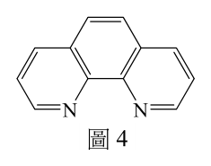
（A） 步驟甲中,溴酸根是還原劑（B） Fe(o-phen) 33 + 氧化後呈現紅色（C） 步驟乙中,溴酸根產生次溴酸是還原反應
圖4（D） Fe(o-phen) 3 2 + 中鐵離子的配位數是6（E） 步驟丙中溶液顏色變化是因為溴離子所造成答案：（C）（D）
詳解與考點 正解：判準是氧化數與配位數。步驟乙中溴酸根的溴由 +5 變為 HOBr 中的 +1，故為還原；而 o-phen 是雙牙基配位子，三個配位子各提供兩個配位原子，二價鐵錯合物的配位數為 6。故選 CD。
C：BrO3− 中 Br 的氧化數為 +5，HOBr 中 Br 的氧化數為 +1；氧化數降低代表溴酸根被還原。
D：每個 o-phen 均以兩個原子與鐵離子鍵結，3 個配位子共提供 6 個配位位置，因此鐵離子的配位數為 6。
A：步驟甲中溴酸根的溴由 +5 降至較低氧化數，是接受電子的一方，應為氧化劑而非還原劑。
B：題幹已標示二價鐵錯合物呈紅色、三價鐵錯合物呈藍色；二價鐵被氧化成三價鐵時，顏色應由紅轉藍。
E：藍轉紅是三價鐵錯合物在步驟丙被還原回二價鐵錯合物所致；溴離子的再生成參與振盪循環，並非顏色的直接來源。
本題考點：氧化還原反應（redox reaction）——用同一元素反應前後的氧化數判斷氧化或還原；配位數（coordination number）——雙牙基配位子提供兩個配位位置，計數時按配位原子而非配位子數目；錯合物顏色（coordination complex color）——依題幹標示把顏色變化連回特定氧化態的錯合物。
第 13 題 （多選）
膽固醇可由肝細胞合成或由食物中攝取,是人體中重要的成分。膽固醇的結構
如圖5 所示,下列相關敘述,哪些正確?
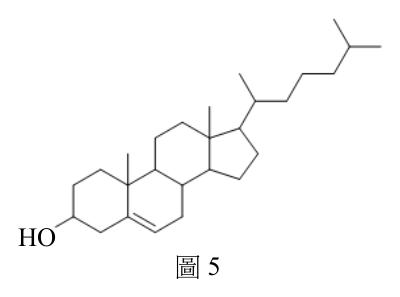
（A） 含有羥基及烯烴（B） 可使紅棕色的溴水褪色（C） 可形成分子間氫鍵,易溶於水（D） 可與斐林試劑作用會產生紅色沉澱（E） 可與 K 2 Cr2 O7 的硫酸溶液反應生成酮類化合物
HO
圖5答案：（A）（B）（E）
詳解與考點 正解：膽固醇結構含有羥基與碳碳雙鍵；雙鍵可與溴水加成而使其褪色，羥基則是次級醇，可被酸性重鉻酸鉀氧化為酮。這三項皆與結構直接相符。故選 ABE。
A：結構上的 HO 為羥基，環系中另有碳碳雙鍵，故同時具有醇與烯烴的官能基特徵。
B：碳碳雙鍵可與 Br2 進行加成反應，消耗有色的溴，因此可使紅棕色溴水褪色。
E：羥基所在碳連接兩個碳原子，屬次級醇；酸性 K2Cr2O7 可將其氧化為酮類化合物。
C：膽固醇雖可藉羥基形成氫鍵，但大部分是龐大的非極性碳氫骨架，整體不易溶於水。
D：斐林試劑主要檢驗具還原性的醛基等官能基；膽固醇不具此類能生成紅色沉澱的結構。
本題考點：官能基辨識（functional-group identification）——先由結構找出羥基與碳碳雙鍵，再連結相應反應；烯烴加成（alkene addition）——溴水褪色須有可加成的碳碳雙鍵；醇的氧化（alcohol oxidation）——次級醇在適當氧化條件下生成酮。
某生在恆溫下進行 Na 2S2 O3 水溶液的分解反應速率實驗,反應式如式2: S2 O3 2 − + 2 H + → SO2 + S + H 2 O (式2) 其實驗步驟如下:
(1)在一個錐形瓶中置入50 mL 的0.20 M Na 2S2 O3 溶液 (2)在瓶子底部下方放置一張畫有黑色「X」標誌的白紙
(3)將10 mL 的0.10 M HCl溶液加入上述錐形瓶中,並立刻按下秒錶且以玻棒 攪拌
(4)由錐形瓶開口向下觀察,當無法看見白紙上「X」標誌時,停止計時並記錄 時間(t)
(5)改變步驟(1)的 Na 2S2 O3 溶液體積,並另加入適量蒸餾水。再重複上述步驟 進行實驗,結果如表1所示。
表1
Na 2S2 O3 溶液體積 蒸餾水體積 標誌消失時間t 1/t 數值 (mL) (mL) (秒) (1/秒)
50.0 0 33.8 0.0296
30.0 20.0 49.2 0.0203
10.0 40.0 150 0.0067
第 14 題 （多選）
關於式2 的反應與實驗設計,下列敘述哪些正確?
Na S O 溶液體積 2 2 3 (mL) 蒸餾水體積 (mL) 標誌消失時間 t (秒) 1/t 數值 (1/秒) 50.0 0 33.8 0.0296 30.0 20.0 49.2 0.0203 10.0 40.0 150 0.0067
（A） H+ 是催化劑（B） 是一個氧化還原反應（C） 三個實驗中,加入H+ 的濃度與體積為一定值（D） 可以用 Na 2S2 O3 濃度對t 作圖,得知其為線性關係（E） 若使用20.0 mL Na 2S2 O3 溶液再進行一次實驗,需使用30.0 mL蒸餾水答案：（B）（C）（E）
詳解與考點 正解：反應式中 S2O3^2− 生成 SO2 與 S，硫的氧化數發生改變；三組實驗則都先配成 50.0 mL 的 Na2S2O3 溶液與水混合液，再加入 10.0 mL、0.10 M 的 HCl。故選 BCE。
B：反應前後硫的氧化數有升有降，因此屬氧化還原反應。
C：表1三組的 Na2S2O3 溶液體積加蒸餾水體積都是 50.0 mL，且步驟固定加入同體積、同濃度的 HCl，所以加入的 H+ 條件相同。
E：若改用 20.0 mL 的 Na2S2O3 溶液，為使改變前的混合液仍為 50.0 mL，蒸餾水應為 50.0-20.0=30.0 mL。
A：H+ 寫在反應式左側且沒有在右側再生，是反應物，不是催化劑。
D：表中的 1/t 才可作為反應速率的近似指標；濃度提高時 t 會縮短，Na2S2O3 濃度對 t 本身不是線性關係。
本題考點：氧化還原反應（redox reaction）——以氧化數是否改變判定，不以是否出現酸為準；控制變因（controlled variables）——比較濃度效果時，H+ 的量與總體積要固定；反應速率指標（rate proxy）——固定終點下，1/t 可用來比較生成沉澱達到同一程度的快慢。
第 15 題 （多選）
關於實驗結果與推論,下列敘述哪些正確?
Na S O 溶液體積 2 2 3 (mL) 蒸餾水體積 (mL) 標誌消失時間 t (秒) 1/t 數值 (1/秒) 50.0 0 33.8 0.0296 30.0 20.0 49.2 0.0203 10.0 40.0 150 0.0067
（A） 此反應對 S2 O3 2 −而言為一級反應（B） 看不清「X」標誌時,代表產生了0.5 mmol 的硫（C） 看不清「X」標誌是由於產生的二氧化硫氣泡干擾（D） 若將HCl溶液濃度改為0.15 M時,不會改變標誌消失的時間(t)（E） 若固定反應總體積,並增加 Na 2S2 O3 溶液體積與減少蒸餾水體積,則標誌消失
時間(t)將變小答案：（A）（E）
詳解與考點 正解：三組實驗中 HCl 的濃度、體積與總體積固定，改變的是 Na2S2O3 的初始濃度。由表中 1/t 隨 Na2S2O3 濃度增加而近似成正比，可用固定終點的 t 反映反應速率，因此 A、E成立。故選 AE。
A：在 H+ 條件固定時，Na2S2O3 濃度由低到高，1/t 由 0.0067、0.0203 增至 0.0296 1/s，近似與濃度成正比，符合對 S2O3^2− 為一級的結果。
E：固定總體積而增加 Na2S2O3 溶液體積，會提高初始 S2O3^2− 濃度，反應較快達到同一混濁終點，所以 t 變小。
B：看不清「X」只表示達到既定的視覺混濁程度，題目沒有提供可換算為 0.5 mmol 硫的校正關係。
C：遮住標誌的是生成的固態硫微粒造成的混濁，不是 SO2 氣泡。
D：HCl 濃度改變會改變 H+ 濃度與反應速率，不能說 t 不變。
本題考點：反應級數（reaction order）——其他條件固定時，以速率與反應物濃度的比例關係判定級數；終點法（clock reaction method）——固定可見終點可用 1/t 比較相對速率；沉澱與混濁（precipitation and turbidity）——觀察到的遮蔽現象要對應實際生成的固體。
甲烷( CH 4 )是天然氣的主要成分,燃燒時可以產生1200-1800 K 的高溫。 圖6 是 CH 4 與 O2 的混合氣體燃燒時產生的火焰示意圖, Z 外焰
其中Z 軸標示了火焰的高度位置。以X=0、Z=0 為起始點, Z=1.0 完全燃燒時的火焰最高點為Z=1.0(cm),火焰高度按比 內焰
Z=0.6
例的相對值為Z=0.2、0.4... ... 等,如圖6 所示。
Z=0.2
科學家透過儀器分析,分別得到在X=0、Z=0 至1.0
X X=0、Z=0 位置的化學成分莫耳分率,結果如圖7 所示。圖7 中 O2 的 莫耳分率數值範圍為0.72-0.92,而其他氣體的比例較少,
莫耳分率數值範圍在0.0-0.20 之間。 圖6
穩定的火焰中,圖7 表示甲烷燃燒過程中的各氣體莫耳分率變化,可以呈現 其燃燒的結果。回答下列問題:
0.92 0.20
0.90 0.18
H2O
0.88 0.16 O2
0.86 0.14 的莫耳分率
0.84 0.12
H2O 0.82 0.10
CH4 的莫耳分率 0.80 CO2, 0.08
O2 CO2 0.78 CO, 0.06
CO 0.76 0.04 CH4,
0.74 0.02
0.72 0.0
0 0.1 0.2 0.3 0.35 0.4 0.6 0.8 1.0 高度Z(cm)
圖7
第 16 題 （多選）
關於此混合氣體燃燒實驗,下列敘述哪些正確?
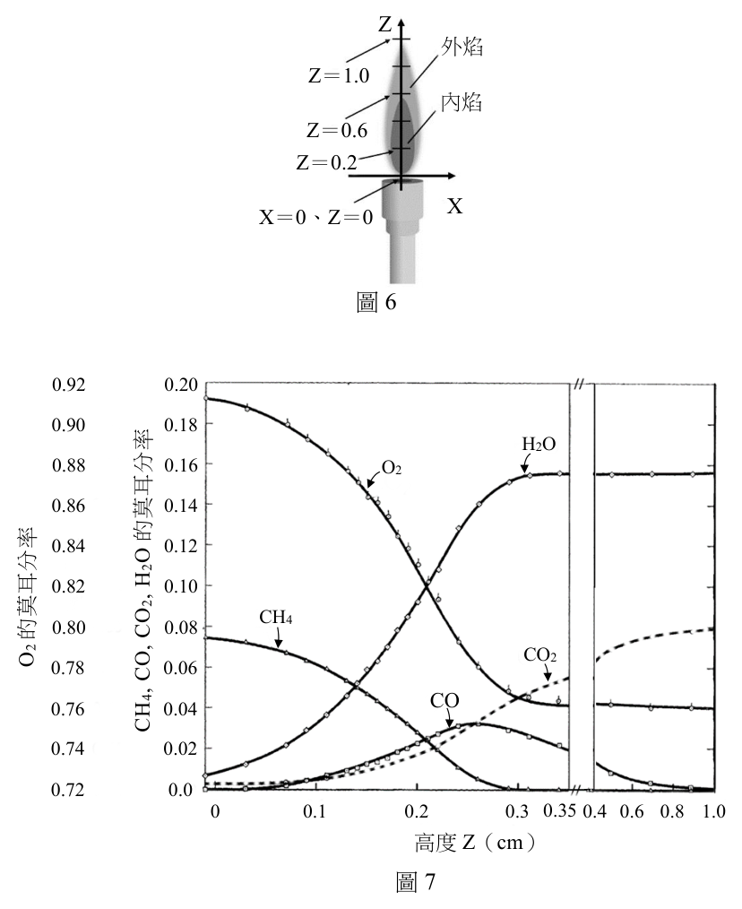
（A） 燃燒前混合氣體中 CH 4 與 O2 的莫耳數比大於0.2（B） 燃燒前混合氣體中有 H 2 O及 CO 2 雜質（C） 燃燒過程共消耗掉約0.15莫耳的 O2（D） 完全燃燒後 CH 4 轉變生成 CO 2 與 H 2 O（E） 完全燃燒後產生之 H 2 O重量約為 CO 2 重量之2倍答案：（B）（D）
詳解與考點 正解：完全燃燒的反應式是 CH4+2O2→CO2+2H2O，因此甲烷完全燃燒後的碳、氫分別進入 CO2 與 H2O，故（D）正確。另由圖7起始位置仍可辨識 H2O 與 CO2 的莫耳分率，表示燃燒前混合氣體含有這兩種雜質，故（B）正確；圖線判讀把握較低。故選 B、D。
B：燃燒起始位置已有 H2O 與 CO2 的莫耳分率，兩者不可能由尚未開始的 CH4 燃燒生成，應為原混合氣體的雜質。
D：CH4 的完全燃燒遵守碳、氫原子守恆，生成物為 CO2 與 H2O。
A：燃燒前 CH4 與 O2 的莫耳數比須以 Z=0 的莫耳分率相除；圖示值不支持其大於0.2。
C：莫耳分率僅反映相對比例，未給總莫耳數，不能算出消耗0.15 mol O2。
E：每1 mol CH4 完全燃燒生成2 mol H2O 與1 mol CO2，水與二氧化碳的質量比為2×18:44=36:44，不是約2倍。
本題考點：甲烷完全燃燒（complete combustion of methane）——先以 CH4+2O2→CO2+2H2O 做原子與莫耳數守恆判斷；莫耳分率（mole fraction）——只能比較相對組成，沒有總莫耳數不能推出絕對莫耳量；燃燒圖線判讀（combustion profile interpretation）——起始位置已存在的產物成分，應先檢查是否為原混合物雜質。
第 17 題 （多選）
下列敘述,哪些符合圖7 的觀測結果?
（A） H 2 O的生成,在Z=0.1 cm 時的速率最快（B） 在Z=0.1 cm 時,每生成1.0莫耳 H 2 O伴隨0.5莫耳 CO 2 的生成（C） 在Z=0.2 cm 時, CH 4 生成CO的速率比CO轉變為 CO 2 的速率快（D） 在Z=0.2 cm 時, CH 4 生成CO的速率比生成 H 2 O的速率快（E） 在Z>0.3 cm 時,主要反應為CO的燃燒答案：（C）（E）
詳解與考點 正解：圖中的莫耳分率變化可用曲線斜率判斷各物質的生成與消耗速率。在 Z=0.2 cm，CO 的莫耳分率仍上升，表示由 CH4 生成 CO 的速率大於 CO 再轉為 CO2 的速率；Z>0.3 cm 時 CH4 已大致消耗，CO 下降而 CO2 上升，主要反應為 CO 的燃燒。故選 CE。
C：CO 莫耳分率在 Z=0.2 cm 上升，代表此處 CO 的生成量大於消耗量，因此 CH4 生成 CO 的速率較 CO 轉為 CO2 的速率快。
E：在火焰後段，CO 減少而 CO2 增加，符合 CO 與 O2 反應生成 CO2 的燃燒。
A：H2O 的生成速率要比較曲線在各位置的斜率，不是只看某位置的莫耳分率；圖示不支持 Z=0.1 cm 為最快。
B：某位置的莫耳分率不是該位置新生成物的化學計量莫耳數，不能直接套用完全燃燒的比例作結論。
D：兩種生成速率同樣須比較 Z=0.2 cm 的曲線斜率；圖示並不支持 CH4 生成 CO 快於 H2O 生成。
本題考點：莫耳分率曲線（mole-fraction profile）——判斷局部生成或消耗時看曲線隨位置的增減與斜率；甲烷燃燒（methane combustion）——先形成 CO 的不完全燃燒區，後段可由 CO 繼續氧化為 CO2；化學計量（stoichiometry）——反應式比例不能直接套到混合氣體在單一位置的莫耳分率。
第 18 題 （多選）
酵素可以催化反應,其第一步是和反應物產生作用,並結合形成複合體。圖8
結構中甲代表反應物,乙代表某酵素中和甲結合部位的示意圖,丙是兩者結合後
的複合體。若催化反應是甲的水解反應,下列敘述哪些正確？
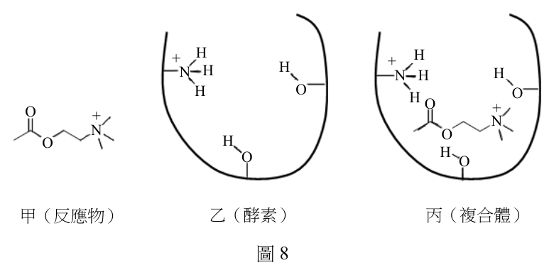
（A） 甲含有5對未鍵結電子對（B） 乙是由胺基酸結合而成（C） 丙中的分子間作用力包含氫鍵（D） 醋酸是反應產物之一（E） 反應後乙將脫去一分子水答案：（B）（C）（D）
詳解與考點 正解：乙既標示為酵素，主要由胺基酸組成；甲與乙結合時，結構中的 N—H 與含氧基團可形成氫鍵。甲進行水解會切斷其含乙醯基的鍵結，醋酸可為產物之一；酵素本身則在反應後恢復。故選 BCD。
B：一般酵素為蛋白質，蛋白質由胺基酸聚合而成，因此乙可視為由胺基酸組成。
C：丙的結構可見可供氫鍵的 N—H 與含孤電子對的氧原子，兩分子結合時包含氫鍵等分子間作用力。
D：甲的乙醯基在水解時形成醋酸，因此醋酸是反應產物之一。
A：未鍵結電子對必須把甲中所有含氮、氧原子的孤電子對逐一計入；5 對不符合其路易斯結構。
E：酵素是催化劑，反應完成、產物離開後應再生為可繼續催化的狀態，不會因催化而固定脫去一分子水。
本題考點：酵素催化（enzyme catalysis）——酵素參與形成複合體但不被淨消耗，反應後要能再生；氫鍵（hydrogen bonding）——辨認 N—H 作供體與 O、N 的孤電子對作受體；水解反應（hydrolysis）——水參與斷鍵，依官能基判斷可能形成的產物。
第 19 題 （多選）
圖9 為由硼砂( Na 2 B4 O7 ⋅ 10H2 O )製備硼元素(熔點:2076 °C)的方法:
圖9
下列關於圖9 的敘述,哪些正確?
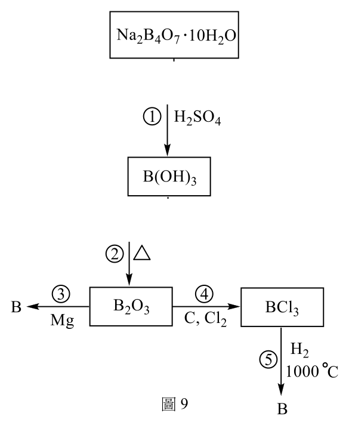
（A） 步驟1的產物 B(OH)3,亦可寫成 H3 BO3,此為鹼性物質,溶於水時會產生OH −ˉ（B） 步驟2的反應式為: 2 B(OH)3 → B2 O3 + 3 H2 O（C） 步驟3的反應式為: B2 O3 +3 Mg → 2 B + 3 MgO（D） 步驟4不屬於氧化還原反應（E） 步驟5較易得到高純度的硼,是因為在高溫下進行,產物中只有硼是固體答案：（B）（C）（E）
詳解與考點 正解：製程中的硼酸脫水、氧化硼被鎂還原，以及高溫分離的相態判斷是核心。2B(OH)3 受熱可失水生成 B2O3+3H2O；B2O3 再被 Mg 還原為 B，反應式為 B2O3+3Mg→2B+3MgO。依流程指定的高溫條件，可利用硼與雜質的相態差異提高所得硼的純度。故選 BCE。
B：左右兩側 B、O、H 原子數分別皆守恆，2B(OH)3→B2O3+3H2O 為正確的脫水反應式。
C：B 在 B2O3 中被還原為元素 B，Mg 被氧化為 MgO；係數配平後為 B2O3+3Mg→2B+3MgO。
E：高溫步驟利用產物與雜質的相態差異進行分離，故較有利取得較高純度的硼。
A：B(OH)3 雖可寫成 H3BO3，但在水中表現為路易斯酸性物質，不是直接產生 OH− 的鹼。
D：步驟 4 涉及元素氧化數改變，不能只當作一般的物理洗滌或分離，仍屬氧化還原反應。
本題考點：硼酸與氧化硼——由 B(OH)3 脫水時先做原子守恆配平；氧化還原反應（redox reaction）——檢查元素氧化數是否改變，再判氧化劑與還原劑；相態分離——高溫純化要比較各成分在指定條件下的固、液、氣相差異。
某生量測三個鹼土族金屬的氫氧化合物之溶解度,方法如下:
(1) 取適量氫氧化合物置於錐形瓶中,加入蒸餾水後攪拌一天,然後靜置一天 (2) 由(1)的錐形瓶中取適當量的溶液,置於另一個錐形瓶中,以0.0020 M HCl的標準溶液滴定。實驗結果如表2所示:
表2
化合物 式量 取用體積(mL) 標準酸滴定用量(mL)
Mg(OH) 2 58.3 50.0 8.12
Ca(OH) 2 74.1 1.00 24.41
Sr(OH) 2 121.6 0.500 34.87
第 20 題 （多選）
關於此實驗的步驟,下列敘述哪些正確?(多選)
化合物 式量 取用體積(mL) 標準酸滴定用量(mL) Mg(OH) 2 58.3 50.0 8.12 Ca(OH) 2 74.1 1.00 24.41 Sr(OH) 2 121.6 0.500 34.87
（A） 步驟(1)應將瓶口用軟木塞蓋緊（B） 步驟(1)靜置的目的是讓懸浮的固體顆粒沉積（C） 此實驗操作溶液溫度需要記錄（D） 步驟(2)應使用適當大小的量筒,取用準確體積的溶液（E） 步驟(2)若改用0.020 M HCl 的標準溶液滴定,則可得到更精確的數據答案：（A）（B）（C）
詳解與考點 正解：本實驗要取得不含未溶固體的飽和上清液，再以標準酸滴定其中的 OH−。因此需避免空氣成分改變溶液、讓固體沉降，並記錄會影響溶解度的溫度。故選 ABC。
A：瓶口以軟木塞蓋緊可減少空氣中的 CO2 溶入並與 OH− 反應，避免飽和溶液組成被改變。
B：靜置可讓懸浮的固體顆粒沉積，取樣時較容易取得澄清的飽和溶液。
C：固體的溶解度通常受溫度影響，記錄溫度才能比較與重現量測結果。
D：量筒適合量取近似體積；題目要求準確體積時，應選用較精確的移液工具。
E：改用 0.020 M HCl 會使滴定體積縮小為原來約 1/10，相對讀值誤差較大，不會因此更精確。
本題考點：飽和溶液（saturated solution）——未溶固體存在時，溶解與沉澱可維持動態平衡；酸鹼滴定（acid-base titration）——標準酸的莫耳數可反推溶液中的 OH−；實驗控制（experimental control）——溫度、氣體接觸與取樣精度都會影響量測。
第 21 題 （多選）
關於表2 的結果,下列敘述哪些正確?(多選)
化合物 式量 取用體積(mL) 標準酸滴定用量(mL) Mg(OH) 2 58.3 50.0 8.12 Ca(OH) 2 74.1 1.00 24.41 Sr(OH) 2 121.6 0.500 34.87
（A） 氫氧化鎂的溶解度最小（B） 溶解度較大者,其溶解速率較快（C） 當飽和溶液生成後,固體粒子的溶解與沉澱達平衡狀態（D） 根據此實驗的步驟與方法,亦可用來量測鹼金族金屬氫氧化物的溶解度（E） 若欲測定 Ba(OH) 2 的溶解度,則應取用50.0 mL飽和溶液答案：（A）（C）（D）
詳解與考點 正解：先把各次滴定的 HCl 莫耳數除以 2，得到 M(OH)2 的莫耳數，再除以取樣體積比較飽和濃度。Mg(OH)2 的 n(HCl)=0.0020×0.00812=1.624×10⁻⁵ mol，故其濃度為 (1.624×10⁻⁵/2)/0.0500=1.62×10⁻⁴ M，遠小於 Ca(OH)2 的 0.02441 M 與 Sr(OH)2 的 0.06974 M。故選 ACD。
A：由滴定換算的飽和莫耳濃度可知，Mg(OH)2 最小，故其溶解度最小。
C：飽和溶液生成後，固體仍在溶解、溶液中的離子也在沉澱；兩方向速率相等時形成動態平衡。
D：鹼金族氫氧化物的飽和溶液也可取樣後以標準酸滴定；只要依其濃度調整取樣體積與滴定條件，方法原理相同。
B：溶解度是平衡時可溶的量，溶解速率是達到平衡的快慢，兩者不能互相推出。
E：Ba(OH)2 的取樣體積要依預期濃度與滴定容量決定；較易溶時通常須取較小體積，不能一概指定為 50.0 mL。
本題考點：滴定計量（titration stoichiometry）——M(OH)2 每莫耳需 2 莫耳 HCl，先換成莫耳再除以樣品體積；溶解度（solubility）——比較飽和濃度或單位體積所溶的量；動態平衡（dynamic equilibrium）——巨觀濃度不變不代表微觀粒子停止交換。
第 22 題
根據此實驗結果,計算氫氧化鈣的溶解度(M)。(2 分)
化合物 式量 取用體積(mL) 標準酸滴定用量(mL) Mg(OH) 2 58.3 50.0 8.12 Ca(OH) 2 74.1 1.00 24.41 Sr(OH) 2 121.6 0.500 34.87
標準答案未收錄
詳解與考點 正解：題目量到的是 1.00 mL 飽和 Ca(OH)2 溶液所含的 OH−，故先用 HCl 的莫耳數，再依 1 mol Ca(OH)2 對應 2 mol OH− 換算。HCl 體積為 24.41 mL=0.02441 L；n(HCl)=0.0020 mol/L×0.02441 L=4.882×10⁻⁵ mol，所以 n(OH−)=4.882×10⁻⁵ mol。n(Ca(OH)2)=4.882×10⁻⁵ mol÷2=2.441×10⁻⁵ mol；樣品體積為 1.00 mL=0.00100 L，溶解度=2.441×10⁻⁵ mol÷0.00100 L=0.02441 mol/L，依有效數字為 0.024 M，故選 0.024 M。
本題考點：酸鹼中和計量（acid-base stoichiometry）——先由標準酸濃度與體積求莫耳數，再以反應係數換算待測物；氫氧化鈣的解離（dissociation of calcium hydroxide）——Ca(OH)2 每 1 mol 產生 2 mol OH−，除以 2 的步驟不可省略；濃度計算（molarity calculation）——樣品濃度的分母應用取出的 1.00 mL 溶液，不是滴定液體積。
在混合溶液中,不同種類分子的分子間作用力差距,會影響溶液偏離理想性質 的幅度。圖10 是在1 大氣壓下,環己烷-乙醇混合溶液所測得的沸點對乙醇莫耳 分率數值(X)的曲線。回答下列問題:
90
80
沸點
(°C)
70
60
0.0 0.2 0.4 0.6 0.8 1.0
乙醇莫耳分率(X)
圖10
第 23 題 （多選）
關於環己烷-乙醇混合溶液的敘述,哪些正確?(多選)
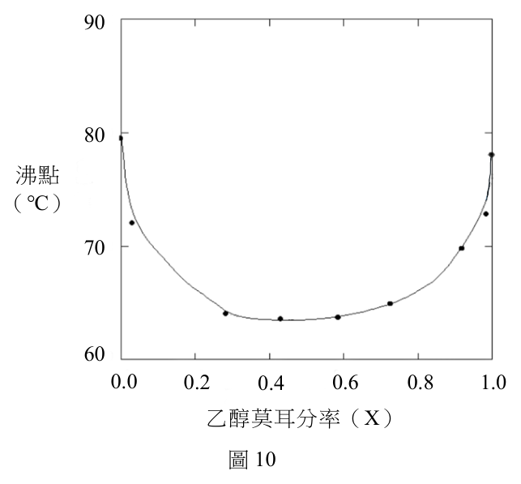
（A） X = 0.5 的環己烷-乙醇混合溶液沸點約為64 °C（B） 將 0.5 L環己烷與 0.5 L乙醇混合後,溶液總體積大於 1.0 L（C） 環己烷與乙醇混合為放熱反應（D） 環己烷分子間作用力大於乙醇分子間作用力（E） 環己烷分子與乙醇分子之間主要以偶極-偶極力互相吸引答案：（A）（B）（D）
詳解與考點 正解：在1 atm 下，圖10顯示乙醇莫耳分率 X=0.5 附近的沸點約為64°C，故（A）正確。曲線的最低沸點反映環己烷與乙醇間作用力較同類分子間作用力弱，混合後較不緊密，總體積可大於原體積和，故（B）正確；兩端純液體的沸點比較則支持（D）。圖形讀值部分把握較低。故選 A、B、D。
A：X=0.5 的曲線讀值約為64°C，低於兩端純液體的沸點。
B：異種分子間吸引較弱時，混合可出現體積膨脹，0.5 L 加0.5 L 的總體積可大於1.0 L。
D：圖中純環己烷端的沸點高於純乙醇端，表示環己烷分子間的整體作用力較大。
C：異種分子間吸引較弱且混合體積膨脹時，需吸收能量破壞原有的較強作用，不能判為放熱混合。
E：環己烷是非極性分子，不能與乙醇主要形成偶極—偶極力；此說法把非極性分子誤當成具永久偶極的分子。
本題考點：拉午耳定律偏差（deviation from Raoult's law）——混合物沸點低於兩端純液體時，先判斷異種分子間作用力是否較弱；體積變化（volume change on mixing）——異種分子間吸引較弱時，分子堆積可能較鬆散而體積膨脹；分子間作用力（intermolecular forces）——偶極—偶極力要求兩個分子都具有永久偶極，非極性環己烷不符合。
第 24 題
下列三種液體甲、乙與丙在60 °C時,蒸氣壓大小順序為何?用「<」的符號
寫出從小到大的順序。(2 分)
甲:純乙醇
乙:純環己烷
丙:0.5 mol 環己烷+0.5 mol 乙醇
本題選項為上圖中的 A／B／C／D，請對照圖片作答。
標準答案未收錄
詳解與考點 正解：同一溫度下，蒸氣壓較大的液體有較低的正常沸點。純環己烷的正常沸點高於純乙醇，所以乙的蒸氣壓小於甲；環己烷與乙醇混合時，異種分子間作用力較乙醇分子間的氫鍵弱，呈正偏差，丙的總蒸氣壓又較甲大。因此從小到大的順序為乙<甲<丙。
本題考點：蒸氣壓與沸點（vapor pressure and boiling point）——在相同外壓下，沸點較低者於同溫的蒸氣壓較高；拉午耳定律正偏差（positive deviation from Raoult's law）——異種分子吸引力較弱時，分子較易逸出液面，總蒸氣壓上升。
第 25 題
X=0.9 的環己烷-乙醇混合溶液,其沸點比純乙醇的沸點明顯降低,寫出其主要
原因。(2 分)
請記得在答題卷簽名欄位以正楷簽全名
本題選項為上圖中的 A／B／C／D，請對照圖片作答。
標準答案未收錄
詳解與考點 正解：乙醇莫耳分率為 0.9 時仍混有環己烷，乙醇—環己烷之間的分子間作用力弱於乙醇分子間的氫鍵。混合會破壞部分乙醇—乙醇氫鍵，使液相分子較容易逸出，蒸氣壓高於理想混合物及純乙醇的對應情況；總蒸氣壓較早達到 1 atm，所以沸點明顯降低。
本題考點：分子間作用力（intermolecular forces）——比較混合前後的同種與異種吸引力，判斷分子是否更容易進入氣相；最低沸點混合物（minimum-boiling mixture）——總蒸氣壓偏高時，在固定外壓下會以較低溫度沸騰。
化合物甲為雌激素,化合物乙、丙、丁亦具有類似的作用,會干擾內分泌 系統的正常運作,稱為環境荷爾蒙,結構如圖11 所示。 OH
OH OH
HO OH
HO
HO
甲 乙 丙 丁
圖11
第 26 題
比較化合物甲~丁的分子結構,推測其關鍵的結構是何種官能基團,寫出此官能基
的中文名稱及畫出其結構。(2 分)
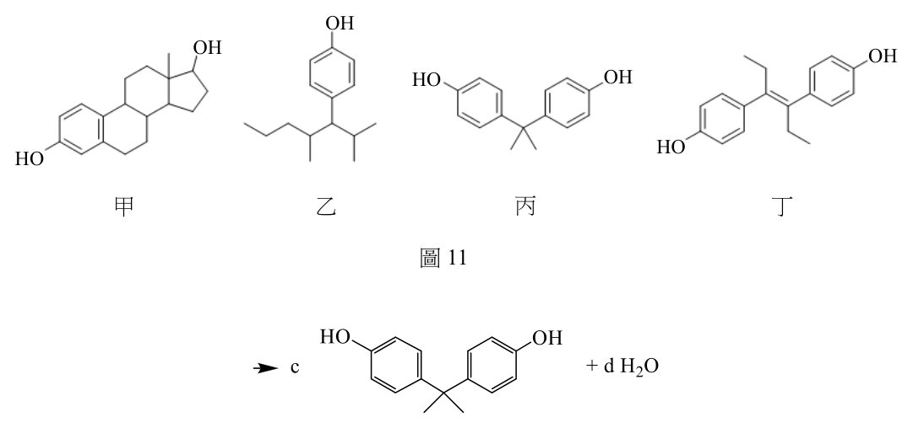
本題選項為上圖中的 A／B／C／D，請對照圖片作答。
標準答案未收錄
詳解與考點 正解：比較甲至丁可見共同重複出現的官能基為羥基，結構可寫成 R—OH，或直接標示為 —OH。若羥基連在芳香環上，則可稱為酚羥基；本題要辨認的是各分子共有的 —OH 結構，而不是各自碳骨架的差異。
本題考點：官能基辨識（functional-group identification）——先找所有結構都重複出現的原子團，再排除只屬於個別分子的碳鏈或環；羥基（hydroxyl group）——看到氧與氫直接相連的 —OH，即可判為羥基。
第 27 題
式3 為工業上合成化合物丙的方法,a-d 為反應式的平衡係數。寫出a:b:c:d 的最小
整數比。(2 分)
(式3)
本題選項為上圖中的 A／B／C／D，請對照圖片作答。
標準答案未收錄
詳解與考點 正解：式3可寫成 2 C6H6O+C3H6O→C15H16O2+H2O。令化合物丙係數為 1，碳原子需滿足 6a+3b=15；取丙酮係數 b=1 時，a=2。左側氫原子數為 2×6+6=18，右側化合物丙已有 16 個氫，故水的係數 d=1；氧原子亦為左側 2+1=3、右側 2+1=3。故 a:b:c:d 的最小整數比為 2:1:1:1。
本題考點：化學反應式平衡（chemical equation balancing）——先固定較複雜產物的係數，再以 C、H、O 逐一守恆檢核；最簡整數比——所有係數確認守恆後，再以公因數約成最小正整數。
第 28 題
畫出式3 反應中 C3 H6 O 的結構式(包含所有原子)。(2 分)
背面還有試題
本題選項為上圖中的 A／B／C／D，請對照圖片作答。
標準答案未收錄
詳解與考點 正解：式3中的 C3H6O 是用於合成化合物丙的丙酮，也就是丙酮（propanone）。其羰基必須位在中間碳原子，完整結構式可寫為 H3C—C(=O)—CH3；左、右兩端各有 3 個 H，中間碳與 O 形成雙鍵，合計正好為 C3H6O。
本題考點：結構異構物（structural isomers）——分子式相同時，須由反應角色或官能基位置辨認正確結構；酮基（ketone group）——羰基碳兩側都接碳原子時寫作 R—C(=O)—R′，本題即為最簡的三碳酮。
果膠為一種水溶性的高分子聚合物,結構中含有大量的羥(-OH)、羧(-COOH) 與酯( -COOCH3 )官能基,如圖12 所示。果膠亦為一種高分子電解質,其結構 單元上含有能解離的官能基團。
COX OH COX OH COX
O O O O O O O
OH OH OH OH OH
O O O O
OH COX OH COX OH
X=OH or OCH3
圖12
小芬取0.2 克果膠,置入15 mL 的濃度0.1 M HCl 水溶液,混合均勻後維持 緩慢攪拌溶液,同時將0.1 M 的NaOH 水溶液慢慢滴入,量測和記錄該溶液的 導電度及pH 值。實驗結果如圖13 所示。X 軸代表所加入的NaOH 體積,Y 軸 左側為導電度(方形□數據),Y 軸右側為pH 值(空心圓○數據)的變化。回答 下列問題。
區域I 區域II 區域III
2500
12
2000 10
導電度 8
1500 (μS / cm) pH
6
1000
導電度 4
pH 值
500
2
0 5 10 15 20 25 30
NaOH 的體積(mL)
圖13
第 29 題
寫出圖13 中,區域I 所發生的主要化學反應式。(2 分)
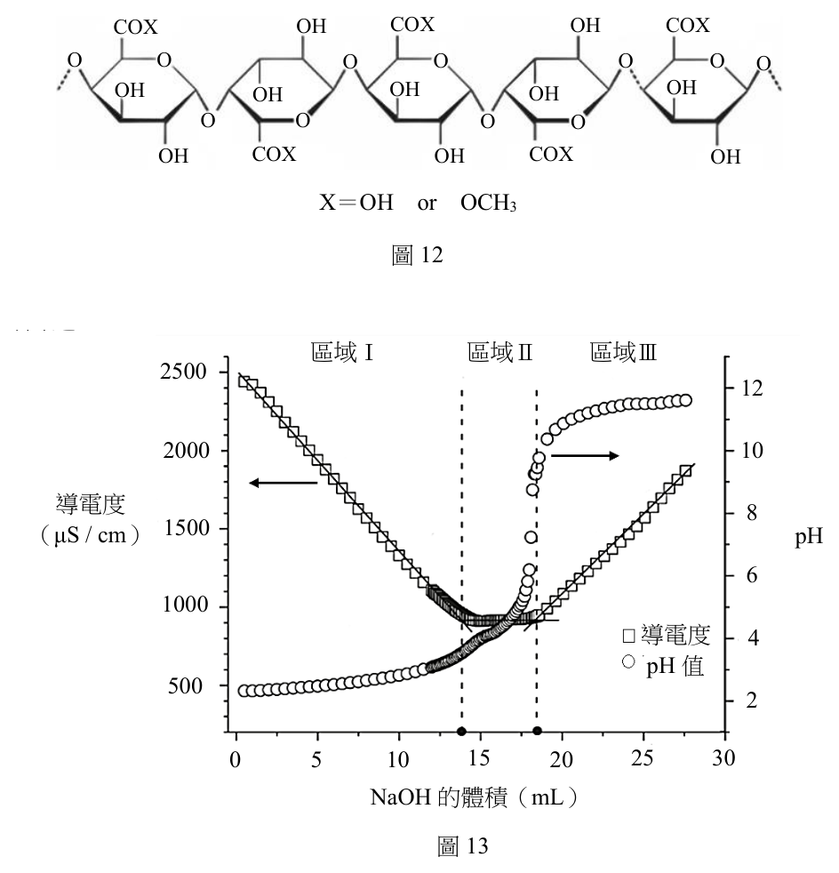
本題選項為上圖中的 A／B／C／D，請對照圖片作答。
標準答案未收錄
詳解與考點 正解：區域I開始時溶液含有過量的強酸 HCl，慢慢加入的 NaOH 主要先中和 HCl。主要反應式為 HCl(aq)+NaOH(aq)→NaCl(aq)+H2O(l)，其淨離子式為 H3O+(aq)+OH−(aq)→2 H2O(l)。此時優先移除導電度高的 H3O+，也正符合區域I的酸鹼中和階段。
本題考點：強酸強鹼中和（strong acid-strong base neutralization）——有過量強酸時，加入 OH− 會先與 H3O+ 反應；淨離子反應式（net ionic equation）——刪去旁觀離子 Na+、Cl− 後，只保留真正發生變化的 H3O+ 與 OH−；導電度滴定曲線（conductometric titration）——先判溶液中哪一種高遷移率離子被消耗，再對應曲線分區。
第 30 題
根據圖13 中pH 值變化,判斷寫出果膠的 pK a 應約為多少?(2 分)
本題選項為上圖中的 A／B／C／D，請對照圖片作答。
標準答案未收錄
詳解與考點 正解：區域II是果膠羧基的弱酸滴定區，pKa 要在半當量點讀取。此區域共消耗 3.9 mL NaOH，半當量點位於自區域II起算 3.9/2=1.95 mL 的位置；此時 [—COOH]=[—COO−]，依 Henderson–Hasselbalch 關係 pH=pKa。由題圖半當量點的 pH 讀值，果膠的 pKa 約為 3.5。
本題考點：半當量點（half-equivalence point）——弱酸滴定時，加入量達可滴定酸量一半即有 [HA]=[A−]；Henderson–Hasselbalch equation——當酸、共軛鹼濃度相等時可直接用 pH 讀出 pKa；羧酸解離（carboxylic-acid dissociation）——果膠的 —COOH 在滴定中轉成 —COO−，其緩衝區可用來判讀酸性強弱。
第 31 題
在區域II 的範圍內,所消耗的NaOH 體積約為3.9 mL。若更換另一種果膠樣品,
實驗操作不變的情況下,區域II 所消耗的NaOH 體積變為4.1 mL,試用官能基
與其數量說明新樣品與原樣品在結構上有何差異?(2 分)
本題選項為上圖中的 A／B／C／D，請對照圖片作答。
標準答案未收錄
詳解與考點 正解：區域II的 NaOH 用於去質子化果膠的羧基，每 1 mol —COOH 對應 1 mol OH−。原樣品所對應的 n(OH−)=0.100 mol/L×3.9 mL×1 L/1000 mL=3.9×10⁻⁴ mol；新樣品為 n(OH−)=0.100 mol/L×4.1 mL×1 L/1000 mL=4.1×10⁻⁴ mol。兩者相差 4.1×10⁻⁴−3.9×10⁻⁴=2.0×10⁻⁵ mol，因此在相同 0.2 g 樣品質量下，新樣品多了 2.0×10⁻⁵ mol 可解離的 —COOH，亦即相對有較少的 —COOCH3 酯基、酯化程度較低。
本題考點：官能基滴定（functional-group titration）——把可滴定官能基與滴定劑的莫耳比寫清楚，才能由體積差推回結構差；羧基與酯基（carboxyl and ester groups）———COOH 會消耗 OH−，—COOCH3 不在此區域以同一方式提供可滴定酸性氫；同質量比較——實驗條件固定時，滴定劑多出的莫耳數可直接反映可反應官能基數量的增加。
其他年度
回到分科測驗化學的年度總覽 ，
或到分科測驗題庫首頁 看其他科目。
題目與標準答案出自大考中心 分科測驗歷年試題（依著作權法 §9，考試試題不受著作權保護）。依中華民國《著作權法》第 9 條第 1 項第 5 款，
依法令舉行之各類考試試題不得為著作權之標的，得自由利用。詳解為 AI 整理的學習輔助，
並非官方標準答案 ；中華民國會修訂，引用前請對照現行版本查證。